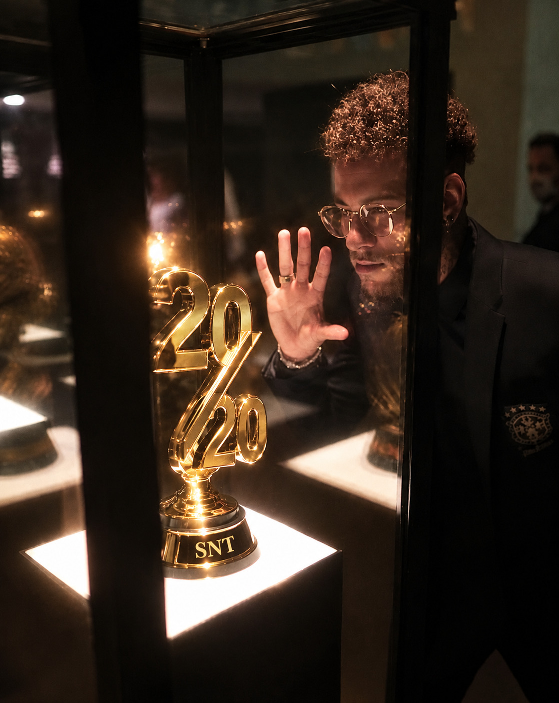

Centre de consultation des archives footballistiques.
Explorez une sélection de documents visuels et de séquences marquantes du football.
⚠️ Certaines images peuvent être sensibles, déconseillé aux moins de 15 ans !

Neymar récompensé
Le jour où le célèbre joueur brésilien Neymar reçoit le prestigieux titre du 20/20 SNT.
Mbappé à 10 ans
Mbappé a officiellement dévoilé un morceau de son passé avec cette vidéo entraînante !
Le jumeau Pessi
Incroyable : Pessi, alias Marc Dupont est sacré meilleur sosie du football mondial.
Train de vie de Ronaldo
Maintenant qu'il a pris sa retraite, il profite au max !